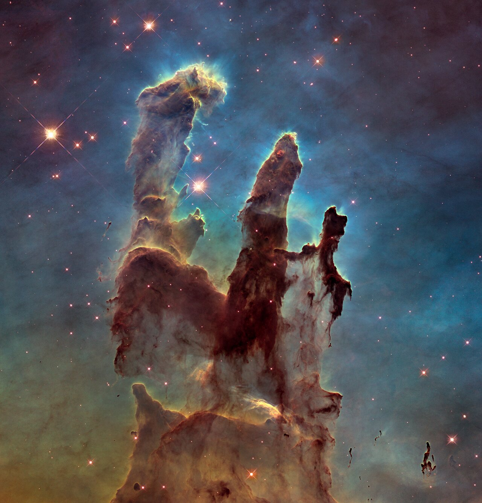

Share Your Sky
Step into frame, then press the button below
Your final image
Try moving the sliders
Pillars of Creation, Eagle Nebula — NASA, ESA and the Hubble Heritage Team (STScI/AURA)

Step into frame, then press the button below
Pillars of Creation, Eagle Nebula — NASA, ESA and the Hubble Heritage Team (STScI/AURA)
